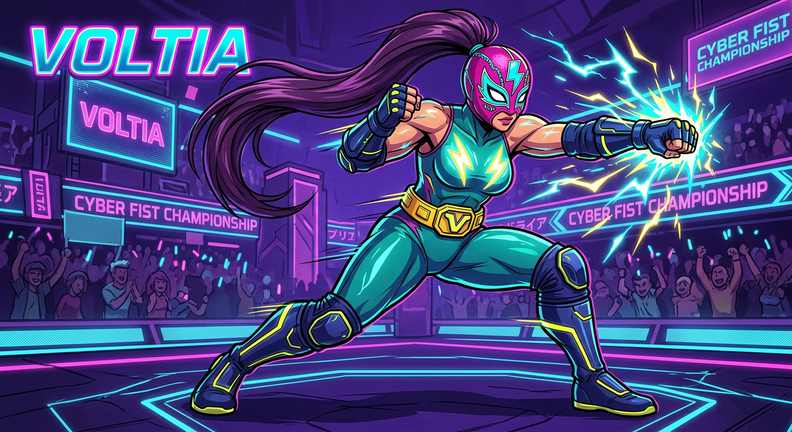
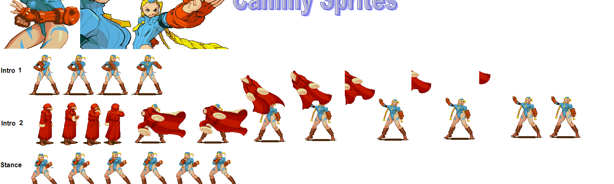
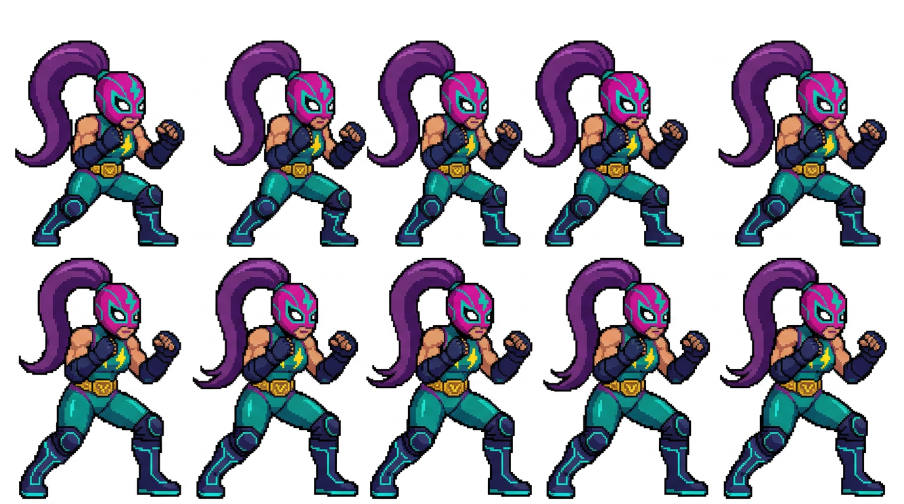
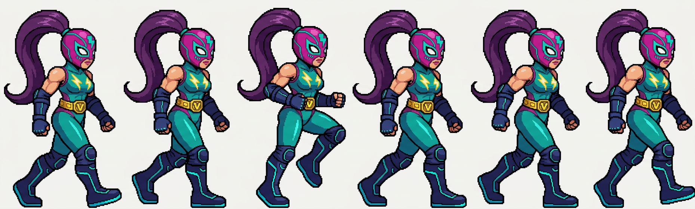

Visor · stance y walk, ya alineados
Línea roja = centro de la cabeza (idéntico en todos los frames). Línea verde = pies (misma altura en todos). Cambia escala, fondo y las guías.
—
Cómo se centra (el método)
El problema anterior: centrar por la caja del sprite. La coleta es enorme y cambia de forma en cada frame, así que mandaba ella y el personaje saltaba. Ahora:
1. Se busca el casco magenta: el bloque de píxeles del tono rosa de la máscara, el
más grande de la mitad superior. Su centro es el ancla.
2. Se mide la distancia centro del casco → línea de pies (el píxel más bajo del sprite) y se escala cada frame para que esa distancia sea 120 px de arte en todos.
3. Se pega cada frame en un lienzo común con el centro del casco clavado en el mismo píxel. Resultado: mismo punto de cabeza y misma línea de pies en los 16 frames.
4. Bajada a rejilla con NEAREST y paleta cerrada sin dithering: sin LANCZOS.
Comprobado: 0 frames cortados en stance (lienzo 142 × 172) y en walk (96 × 154).
2. Se mide la distancia centro del casco → línea de pies (el píxel más bajo del sprite) y se escala cada frame para que esa distancia sea 120 px de arte en todos.
3. Se pega cada frame en un lienzo común con el centro del casco clavado en el mismo píxel. Resultado: mismo punto de cabeza y misma línea de pies en los 16 frames.
4. Bajada a rejilla con NEAREST y paleta cerrada sin dithering: sin LANCZOS.
Comprobado: 0 frames cortados en stance (lienzo 142 × 172) y en walk (96 × 154).
Las dos referencias que diste


Lo que devolvió la IA


Medidas
| Métrica | Original (oficial) | IA tal cual | Recortado y centrado |
|---|---|---|---|
| Colores | 18 | 156 834-182 196 | 32 · paleta cerrada |
| Rejilla de píxel | 2 px exactos | no hay (5-23 % bloques) | píxel entero |
| Centrado | por caja | — | por cabeza + pies |
| Frames cortados | — | — | 0 |
| Cabeza-pies | — | variable | 120 px en todos |
| Stance / walk | 15 / 6 | 10 / 6 | 10 / 6 |
| Diseño | original | muy fiel | muy fiel |
Lo mejor de esta tanda: el diseño sale muy fiel a tu referencia —casco magenta con
detalles teal, rayo amarillo, cinturón con hebilla, coleta morada— y el estilo se acerca al de
Cammy: píxel plano, línea negra, proporciones de sprite de pelea.
Lo que sigue pendiente: la IA no entrega la rejilla (hay que bajarla), el stance vino en 10 frames en vez de los 15 originales, y los pies aún se mueven 1-2 px entre frames porque la IA no dibuja el mismo suelo. El siguiente paso es igualar el tamaño a la rejilla oficial (94 × 151) y comprobar pivote contra el juego.
Lo que sigue pendiente: la IA no entrega la rejilla (hay que bajarla), el stance vino en 10 frames en vez de los 15 originales, y los pies aún se mueven 1-2 px entre frames porque la IA no dibuja el mismo suelo. El siguiente paso es igualar el tamaño a la rejilla oficial (94 × 151) y comprobar pivote contra el juego.